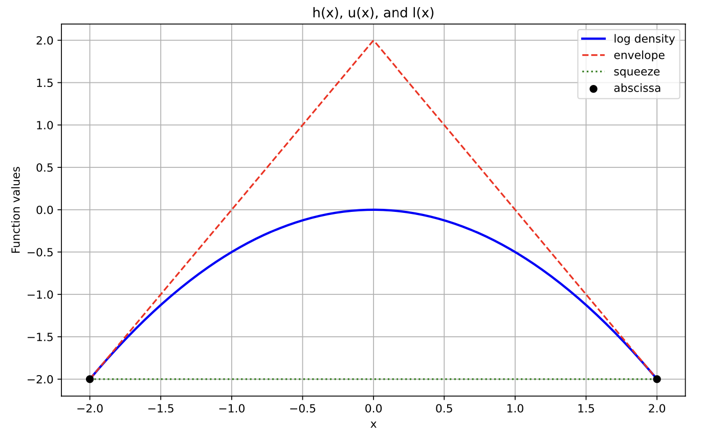
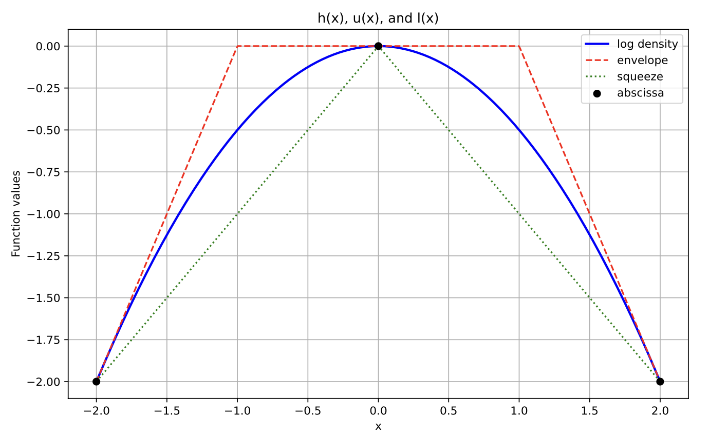
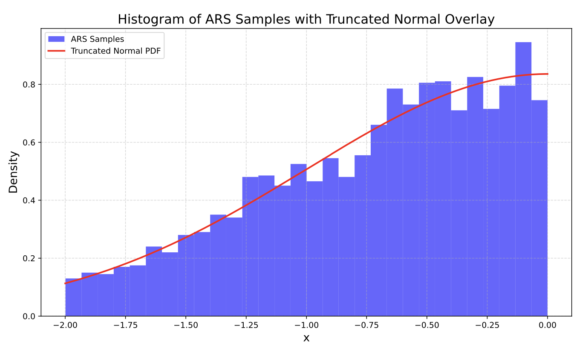
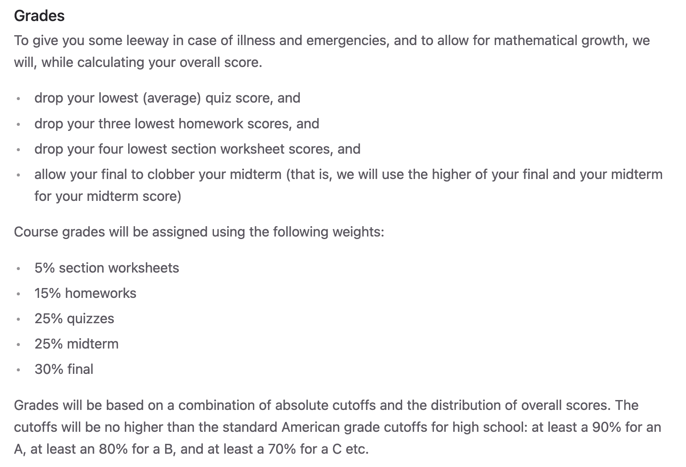
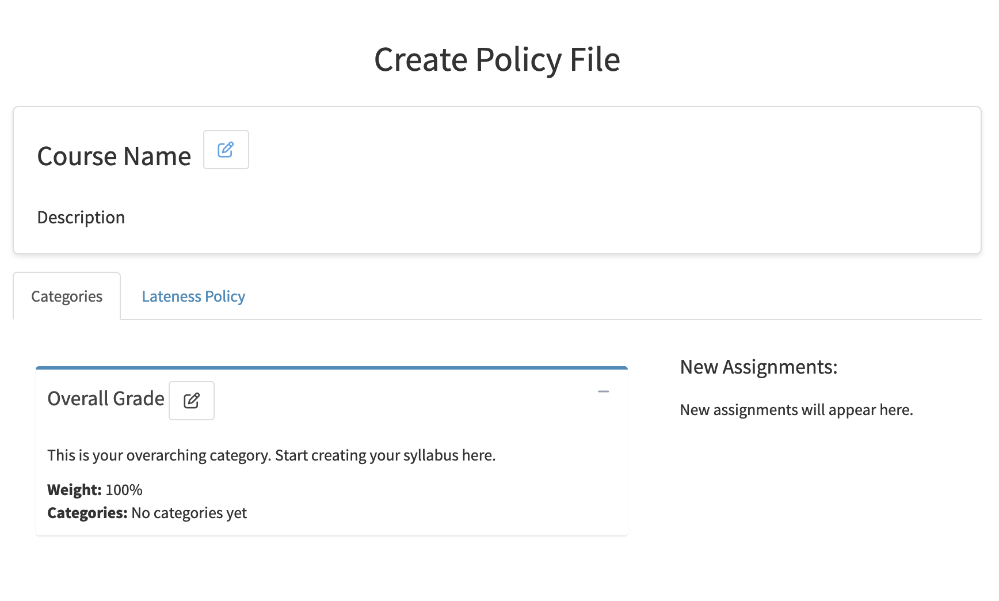
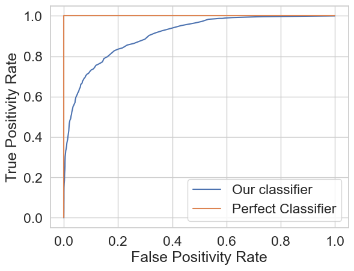
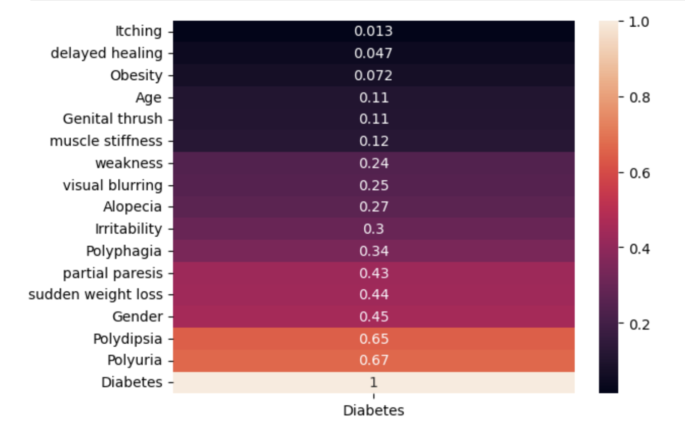

import numpy as np
import matplotlib.pyplot as plt
import seaborn as sns
import arsProject Portfolio
Adaptive Rejection Sampler
November 2024 - December 2024
Code available upon request.
Description: Adaptive rejection sampling is a computationally efficient algorithm that allows sampling of log-concave probability density functions. Like the name suggests, ARS is relatively similar to rejection sampling except we can manipulate the log-concavity to create “squeeze” and “envelope” linear functions that limit both the number of samples we have to throw away and the number of evaluations of our probability density function. This can be particularly useful in cases such as gibbs sampling where evaluation of the pdf can be expensive or when sampling a truncated distribution.
Algorithm:
Initialize some abscissa \(T_k\), and calculate breakpoints \(z_k\), where \(z_0\) is the lower bound of the domain \(D\)¸
while number of samples desired not reached:
Calculate the envelope and squeeze functions at abscicca points, as well as a sample function \(s_k\), which is the exponentiated and normalized envelope.
Draw some \(w \sim \textnormal{Uniform}(0, 1)\) and \(X^{\star} \sim s_k\)
if \(w \leq \exp(h(X^{\star}) - u(X^{\star}))\) accept \(X^{\star}\) and return to begining of while loop.
otherwise, calculate the log pdf and derivative log pdf values of \(X^{\star}\), \(h(X^{\star})\), and \(h^\prime(X^{\star})\).
if \(w \leq \exp(h^\prime(X^{\star}) - u(X^{\star}))\) accept \(X^{\star}\)
add \(X^{\star}\) to the abscissa
Example:
How the algorithm works with an unnormalized normal density:
def alpha_normal_pdf(x, mu, var):
return np.exp((-1 / (2*np.sqrt(var)) ) * (x - mu) ** 2)
def plot_h_l_u(T, hvals, h, hprimes, z_ext):
x_vals = np.linspace(z_ext[0], z_ext[-1], 500)
# envelope
u = ars.utils.get_u(T, hvals, hprimes, z_ext)
# squeeze
l = ars.utils.get_l(T, hvals)
h_y = np.array([h(x) for x in x_vals])
u_y = np.array([u(x) for x in x_vals])
l_y = np.array([l(x) for x in x_vals])
plt.figure(figsize=(10, 6))
plt.plot(x_vals, h_y, label='log density', color='blue', linewidth=2)
plt.plot(x_vals, u_y, label='envelope', color='red', linestyle='--')
plt.plot(x_vals, l_y, label='squeeze', color='green', linestyle=':')
plt.scatter(T, hvals, color='black', label='abscissa', zorder=5)
plt.legend()
plt.xlabel('x')
plt.ylabel('Function values')
plt.title('h(x), u(x), and l(x)')
plt.grid(True)
plt.show()Here we will initialize the abscissa as -2 and 2. The z, and hprime calculations are all available in the source code upon request. Here is a visual representation of the squeeze and envelope functions that provides some intuition.
T = [-2, 2]
z_ext = [-2, 0, 2]
h = lambda x: np.log(alpha_normal_pdf(x, 0, 1))
hvals = [-2, -2]
hprimes = [2, -2]
plot_h_l_u(T, hvals, h, hprimes, z_ext)
With another point in the abscissa (might occur if we rejected some \(X^\star=0\) during the initial squeeze test):
T = [-2, 0, 2]
h = lambda x: np.log(alpha_normal_pdf(x, 0, 1))
hvals = [-2, 0, -2]
hprimes = [2, 0, -2]
z_ext = ars.utils.get_z_ext(T, hvals, hprimes, 2, -2)
plot_h_l_u(T, hvals, h, hprimes, z_ext)
Now suppose we wanted to sample some truncated normal distribution between -2 and 0. We could simply use our ars method to create and plot 3000 samples:
from scipy.stats import truncnorm
std_normal_pdf = lambda x: alpha_normal_pdf(x, mu=0, var=1)
# Domain
D = (-2, 0)
sampler = ars.Ars(pdf=std_normal_pdf, D=D)
samples = sampler.ars(3000)
# Truncated Normal PDF from scipy for overlay
a, b = (D[0] - 0) / 1, (D[1] - 0) / 1 # Normalized bounds for standard normal
x_vals = np.linspace(D[0], D[1], 500)
truncated_pdf = truncnorm.pdf(x_vals, a, b, loc=0, scale=1)
plt.figure(figsize=(10, 6))
plt.hist(samples, bins=30, density=True, alpha=0.6, color='blue', label='ARS Samples')
plt.plot(x_vals, truncated_pdf, 'r-', lw=2, label="Truncated Normal PDF")
plt.title("Histogram of ARS Samples with Truncated Normal Overlay", fontsize=16)
plt.xlabel("x", fontsize=14)
plt.ylabel("Density", fontsize=14)
plt.legend()
plt.grid(True, linestyle='--', alpha=0.5)
plt.tight_layout()
plt.show()
What I Learned
Enhanced teamwork and collaboration by effectively utilizing Git and GitHub for version control.
Developed a comprehensive Python package, incorporating well-structured modules, clear documentation, and robust functionality to address specific programming needs or streamline workflows.
Improved understanding of simulation, using Inverse Transform Sampling to sample from the normalized exponential envelope function.
Gradebook
January 2024 - June 2024
https://www.github.com/gradebook-dev/
Description: Gradebook is an open-source R package and Web Application that provides a consistent interface for instructors to quickly and more accurately calculate course grades.
The Problem: Many instructors (especially at Berkeley) opt to use Gradescope for students to upload their submissions to course assignments, as it provides an industry leading interface to instructors and readers for grading. However, Gradescope lacks functionality of implimenting a course policy. An example of a course policy (Data 88S):

At first, this might seem like a simple problem to solve with some sort of code file (perhaps using Pandas & NumPy in Python or R). But we have seen with courses such as Statistics 20 that these course policies can get extraordinarily convoluted and error prone.
The current best solution for instructors to calculate final grades based on their course policy is to either of the following:
- Parallel program two seperate code books and compare the scores against one another until they agree.
- pros: very accurate
- cons: takes two programmers that fully understand the course policy & takes longer than single code book.
- Create a single code book that can result in potential bugs that result in inaccurate scores.
- pros: faster than parallel programming
- cons: error prone and still not a fast solution.
The Solution:
Gradebook: An interface that abstracts the code into human understandable steps.

An instructor (or reader) provides the web app with their course policy using the intuitive policy tab. Then, they can upload their course’s Gradescope CSV to see data visualizations, statistics, a final grade table, and more.
What I Learned
During my time with the Gradebook team, I was responsible for designing and developing the “Dashboard” which displays graphics and statistics so the instructor can visually gauge their student’s project.
Applying Data Visualization skills using Plotly.
Git and GitHub (including branching, pull requests, working with github in a team setting).
The importance of Teamwork & Communication in Data Science.
Web development essentials (incl. HTML, CSS)
Email Spam Detection
November 2023, February 2024
Code available upon request.
Description: In my time as an undergraduate at Berkeley, I’ve had a few projects address the famous problem of email spam detection. In two seperate semesters, I created both a Logistic Regression and a Support Vector Machine model.
Logistic Regression
To find the best features for my model, I used exploritory data analysis techniques, including visualization with a heatmap of the feature correlations, bivariate data analysis with data visualization, and filling NA values in features with appropriate aggregations (mean, median, or 0 depending on skew of univariate distribution).
I also used feature engineering to get some of the most effective features for my regression. Some of the best features I found were the following:
Email is a “forwarded” or “reply” *.
Length of subject line in email.
Overall “wordiness” of email *.
Proportion of capital letters in subject line *.
* indicates featured engineering used.

Resulting ROC Curve:

My final test accuracy using this model was \(\approx\) 87%.
Support Vector Machine (SVM)
Used k-fold cross validation to optimize C value in svm.SVC function found in the scikit-learn package in Python. Eventually landed on a test accuracy of 86% using the rbf kernel with a C value of 325.
What I Learned
Logistic Regression, including cross entropy loss, logit function, and interpretation.
Further developed knowledge of the scikit-learn tool basket.
Soft-margin Support Vector Machines (SVMs), who introduces flexibility by allowing some margin violations (compare to hard-margin who don’t).
Diabetes Prediction
December 2023
https://github.com/calv2n/diabetes-risk-model
Description: In this project, I gathered data about diabetes patients from Kaggle and made accurate models for diagnosis given some common indicators. For my models, I wanted high accuracy and interpretability so we can see why the model chose what it chose. This is why I decided to use two seperate models: Logistic Regression and the Random Forest Classifier.
EDA: In the exploratory data analysis portion of building these models, I wanted to find the best way to visualize the best features for prediction. To do so, I created a heatmap of the absolute valued correlation between each feature and the diagnosis.
sns.heatmap(df.corr()['Diabetes'].abs().sort_values().to_frame(), annot=True);
From here, I decided to use all of ‘Age’, ‘Gender’, ‘Polyuria’, ‘Polydipsia’, ‘sudden weight loss’, ‘weakness’, ‘Polyphagia’, ‘Genital thrush’, ‘visual blurring’, ‘Irritability’, ‘partial paresis’, ‘muscle stiffness’, ‘Alopecia’, and ‘Obesity’ to make my predictions.
Logistic Regression
from sklearn.linear_model import LogisticRegression
model = LogisticRegression(max_iter=500)
model.fit(X_train, y_train)
train_prediction = model.predict(X_train)
val_prediction = model.predict(X_val)
train_accuracy = np.mean(train_prediction == y_train)
val_accuracy = np.mean(val_prediction == y_val)
print(f'Model training accuracy: {train_accuracy}')
print(f'Model validation accuracy: {val_accuracy}')Model training accuracy: 0.9302884615384616
Model validation accuracy: 0.9038461538461539Highlights:
>90% validation accuracy using a human interpretable model.
Modified threshold to supremum such that the model’s recall was 100% (important to minimize false negatives in many healthcare settings) while keeping validation accuracy > 85% (see chunk 57).
**Random Forest Classifier
from sklearn.ensemble import RandomForestClassifier
m2 = RandomForestClassifier(random_state=42)
m2.fit(X_train, y_train)
m2_val_prediction = m2.predict(X_val)
print(f'Model Validation Accuracy: {(tp + tn) / (tp + tn + fp + fn)}')
print(f'Model Precision: {tp / (tp + fp)}\nModel Recall: {tp / (tp + fn)}')Model Validation Accuracy: 0.9807692307692307
Model Recall: 1.0
Model Training Accuracy: 1.0Highlights:
>=99% validation accuracy, though not human interpretable.
Keeps highest possible validation accuracy while keeping recall at 100%.
What I Learned
How to manipulate prediction threshold in code to maximize recall.
The importance of maximizing recall in a diagnosis setting. It’s way more dangerous (and potentially life threatening) to wrongly tell someone that they don’t have a disease when they do in reality.
The “tradeoff” of interpretability and accuracy in machine learning.
I used this project as an oppertunity to explore the implementation of random forest models. I learned how they worked in theory how they worked in Data 102 and from there thought they were very interesting.
Why (in practice) symptoms like constant urination and obesity are considered common symptoms of diabetes.
Gitlet
July 2023
Code available upon request.
Successfully Implemented the following commands from the Git Version Control System:
init: Creates a new Gitlet version-control system in the current directory.
add: Adds a copy of the file as it currently exists to the staging area.
commit: Saves a snapshot of tracked files in the current commit and staging area so they can be restored at a later time, creating a new commit.
restore: Restore is used to revert files back to their previous versions. Depending on the arguments, there’s 2 different usages of restore:
java gitlet.Main restore -- [file name]java gitlet.Main restore [commit id] -- [file name]
log: Starting at the current head commit, display information about each commit backwards along the commit tree until the initial commit, following the first parent commit links, ignoring any second parents found in merge commits.
===
commit a0da1ea5a15ab613bf9961fd86f010cf74c7ee48
Date: Thu Nov 9 20:00:05 2017 -0800
A commit message.
===
commit 3e8bf1d794ca2e9ef8a4007275acf3751c7170ff
Date: Thu Nov 9 17:01:33 2017 -0800
Another commit message.
===
commit e881c9575d180a215d1a636545b8fd9abfb1d2bb
Date: Wed Dec 31 16:00:00 1969 -0800
initial commitglobal-log: Like log, except displays information about all commits ever made.
rm: Unstage the file if it is currently staged for addition. If the file is tracked in the current commit, stage it for removal and remove the file from the working directory if the user has not already done so.
find: Prints out the ids of all commits that have the given commit message, one per line. If there are multiple such commits, it prints the ids out on separate lines.
status: Displays what branches currently exist, and marks the current branch with a
*. Also displays what files have been staged for addition or removal.branch: Creates a new branch with the given name, and points it at the current head commit.
switch: Switches to the branch with the given name. Takes all files in the commit at the head of the given branch, and puts them in the working directory, overwriting the versions of the files that are already there if they exist. Also, at the end of this command, the given branch will now be considered the current branch (HEAD). Any files that are tracked in the current branch but are not present in the checked-out branch are deleted. The staging area is cleared, unless the checked-out branch is the current branch.
rm-branch: Deletes the branch with the given name. This only means to delete the pointer associated with the branch; it does not mean to delete all commits that were created under the branch, or anything like that.
reset: Restores all the files tracked by the given commit. Removes tracked files that are not present in that commit. Also moves the current branch’s head to that commit node.
What I Learned
This was my first large project when I came to Berkeley as an undergraduate.
Java for large scale projects
Designing and implimenting data structures to maximize efficiency.
Fundamentals of Git as a software from the ground up.